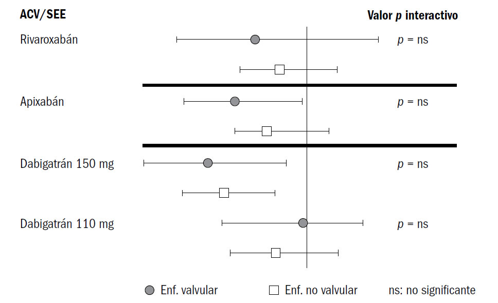

¿EXISTE LA FIBRILACIÓN AURICULAR NO VALVULAR? 38
¿CUÁL ES SU RIESGO CARDIOEMBÓLICO?
38
Se denomina fibrilación auricular no valvular a todas las fibrilaciones, excepto las presentes en
la estenosis mitral reumática moderada o severa, o con prótesis mecánicas/biológicas/plastias.
Este concepto adquirió importancia en el último lustro, ya que fue el adoptado como criterio de
exclusión de los grandes estudios aleatorizados que estudiaron las ventajas de los nuevos anticoagulantes
orales (NACO) en relación con la warfarina. Esos estudios permitieron el ingreso de los
pacientes portadores de insuficiencia mitral o estenosis aórtica en un porcentaje que osciló entre
14% en Rocket y 26% en Aristóteles.
Recientemente, Breithardt realizó un análisis posterior de este grupo de pacientes, en los cuales
comparó el rivaroxabán con la warfarina. Esta población era portadora más frecuentemente de
insuficiencia cardíaca, insuficiencia renal y enfermedad vascular periférica.
Luego de corregir los factores de riesgo agregados, la presencia de enfermedad no valvular mostró
similares tasas de eventos que en los portadores de valvulopatía aceptada en el protocolo.
Estas salvedades en relación con el uso de los NACO adquirieron máxima importancia luego de la
publicación del estudio RE-ALIGN, en el que se constató la falta de eficacia del dabigatrán en el tratamiento
de los pacientes portadores de valvulopatía mitral (estenosis) y de reemplazo protésico.
Figura 1.Adaptada de Hohnloser European Heart Journal, 2014.

CONCLUSIONES
Los NACO pueden usarse con seguridad en la población con fibrilación auricular, incluidos los pacientes
con insuficiencia mitral, insuficiencia aórtica, o estenosis aórtica leve y moderada
LECTURAS RECOMENDADAS
Avezum A, et al ARISTOTLE Investigators. Apixaban versus warfarin in patients with atrial fibrillation and valvular
heart disease: findings from the ARISTOTLE study. Eur Heart J 2013;34 (Suppl 1):809 (abstract).
Breithardt G, et al, for the ROCKET AF Steering Committee & Investigators. Clinical characteristics and outcomes
with rivaroxaban versus warfarin in patients with non-valvular atrial fibrillation but underlying native mitral and
aortic valve disease participating in the ROCKET AF trial. Eur Heart J2014;35:3377-85.
Camm AJ, et al; ESC Committee for Practice Guidelines (CPG). 2012 focused update of the ESC Guidelines for the
management of atrial fibrillation: an update of the 2010
Eikelboom JW, et al, for the RE-ALIGN Investigators. Dabigatran versus warfarin in patients with mechanical heart
valves. N Engl J Med 2013;369:1206-14.
ESC Guidelines for the management of atrial fibrillation—developed with the special contribution of the European
Heart Rhythm Association. Eur Heart J 2012;33:2719-47.
Ezekowitz MD, et al. Comparison of dabigatran and warfarin in patients with atrial fibrillation and valvular heart
disease: the RE-LY trial. J Am Coll Cardiol 2014;63:A325 (abstract).
Hohnloser SH, et al. Atrial fibrillation, valvular heart disease, and use of target specific oral anticoagulants for
stroke prevention. Eur Heart J 2014;35:3323-5.
Ruff CT, et al. Comparison of the efficacy and safety of new oral anticoagulants with warfarin in patients with atrial
fibrillation: a meta-analysis of randomised trials. Lancet 2014;383:955-62.